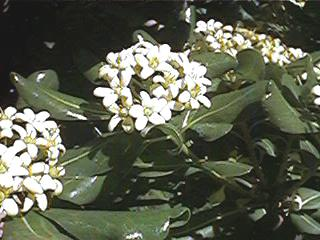
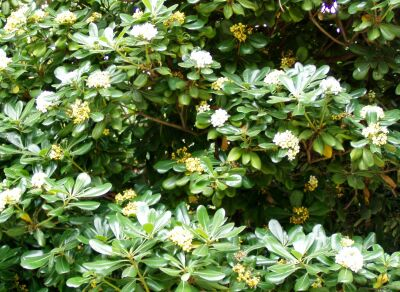

| Pittosporum
tobira W.T. Aiton,
Hortus Kew., ed. 2. 2: 27 (1811) |
Pitosporáceas |
| Pitósporo,
azahar de China |
Arbusto
perennifolio |
|
Arbusto perennifolio, muy ramificado y de
follage denso, que
puede convertirse en un arbolito de hasta 6 m, de copa
redondeada,
ramas algo
tortuosas y corteza pardo-grisácea o pardo-rojiza, casi
lisa,
con canales
resinosos.
Hojas simples, alternas (aunque tienden a
agruparse en el
extremo de las ramas),
cortamente pecioladas; lamina de 5-10 x (2-)2’5-4 cm,
obovada, entera,
gruesa
y coriácea, atenuada en la base y obtusa o emanginada en
el
ápice, con margen
ligeramente revoluto, de color verde intenso, algo más
pálido por el envés.
Inflorescencia umbeliforme, terminale.
Flores de unos 10 mm, hermafroditas,
actinomorfas,
pentámeras,
blancas o amarillentas; sépalos soldados en la base,
pubescentes; pétalos libres, algo carnosos, de ápice
recurvado; 5 estambres que
alternan con los petalos y no asoman; ovario súpero;
estilo
simple, alargado, algo
exerto que remata en un estigma engrosado.
Fruto de unos 10 mm, de tipo cápsula,
ovoide o globoso,
de algo más de un centímetro, paredes gruesas, o casi
leñosas; se abre por 2 a 5 valvas, cada una con varias
semillas
impregnadas de una sustancia
pegajosa.
Florece de Marzo a Mayo. |
 Foto: Carlos Romero Zarco |
 Foto: Pedro Romero Zarco |
Observaciones.-
Pittosporum viene del griego pittos (resina) y spora (semilla), aludiendo a sus semillas pegajosas; tobira es el nombre japonés y significa al parecer batiente hoja de puerta. Sus flores, de pétalos gruesos, recuerdan a las del naranjo, a lo que se debe el nombre de “azahar de china". Se introdujo en
cultivo en
Europa en los jardines de Kew en 1804. En la
actualidad no sólo
es una excelente planta ornamental
por su carácter rústico, su follaje lustroso, y
sus
flores olorosas, sino que es uno de los arbustos
siempreverdes
preferidos para
formar setos.
|
| Área de Origen.-
Japón. |
|
| Uso en el campus.- Como
arbusto ornamental; un par de ejemplares en la
zona central del Campus. |
Localización.- |
|
©
|
|